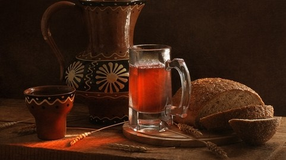

Description
Ingredients
- 2.5 gallons or 10 qt of water
- 1 lb or 9 slices of classic black, dark or rye bread
- 1 handful of raisins
- 1.8 lb (4 cups) of sugar
- 1.5 Tbsp of active dry yeast
- 3 large plastic soda bottles
Steps
- Fill giant stock pot with 2.5 gallons of water (or divide it into two large pots) and bring to a boil.
- While waiting, toast the bread slices twice on the darkest toaster setting.
- When water starts to boil, remove the pot from heat.
Add a handful of raisins and toasted bread to the pot, cover with the lid and let it stay overnight or at least 8 hours.
- Carefully remove toasted bread and discard it
- In a medium bowl, mix together 4 cups of sugar and 1.5 Tbsp of yeast, add them to kvas mixture and stir.
- Discard floating raisins by scooping them up with a large spoon. Using strainer or cheese cloth, pour kvass into bottles
Home